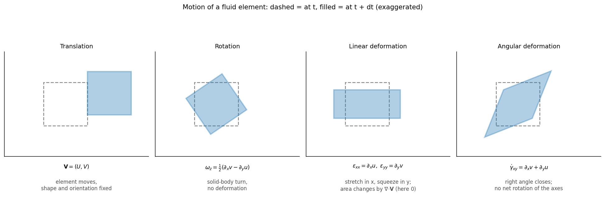
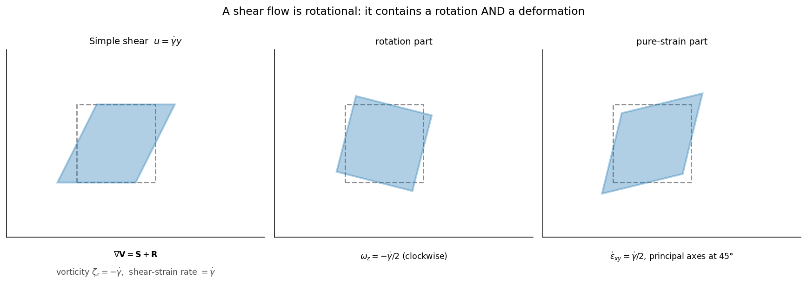
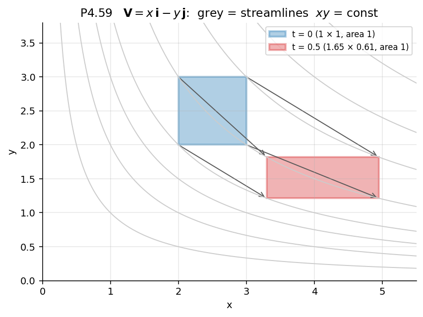

Differential Mass Conservation and Fluid Kinematics – Formula Bank
← up: Fluid Mechanics MOC · builds on: Material derivative, Integral continuity · worked problems: Solved Problems
Equation numbers are White's. Items marked ✓ are verified symbolically in Tools/fm_core.py. Sign convention for and is White's (§3).
1. Acceleration field · 2. Differential mass conservation · 3. Stream function · 4. Motion of a fluid element · 5. Vorticity and circulation · 6. Velocity potential and irrotational flow · 7. Standard plane flows · 8. Checking a velocity field
1. Acceleration field
Local term (zero if steady) + convective term (nonzero wherever velocity varies in space). Steady ≠ zero acceleration. Same operator for any property: (4.3).
Cylindrical components (steady, axisymmetric-free, ):
(plus terms if unsteady). The is the centripetal acceleration.
2. Differential mass conservation
Mass balance on a fixed element :
Equivalent form following a particle: .
| Case | Cartesian | Cylindrical |
|---|---|---|
| general | (4.4) | (4.9) |
| steady | (4.10) | drop |
| incompressible (steady or not) | (4.11, 4.12a) | (4.12b) |
| plane, incompressible |
Spherical , incompressible (P4.12): . Purely radial flow: .
When is a flow "incompressible"? (4.13–4.18) Bernoulli and give
(density change ≈ 4.5 % at ; m/s in air at standard conditions; nearly all liquid flows). Exception: stratified (thermally or salinity layered) fluids, where matters even at low speed.
Remarks. Continuity holds for steady or unsteady, viscous or inviscid flow, because it only assumes a continuum. It does not allow sources/sinks inside the element (singular points need separate handling). Every proposed velocity field must satisfy it (Ex. 4.2: linear in conserves mass iff ).
Integrating continuity (Ex. 4.3). Given in an incompressible flow: , then ; the "constant" of integration is a function of the other variables, fixed by a boundary condition (e.g. at a wall).
3. Stream function
For a 2-D incompressible flow () there exists with (White's sign convention)
| Property | Statement |
|---|---|
| Streamlines | (since ) |
| Volume flow | between two streamlines per unit depth ; across a curve : |
| Direction of crossing | for positive the flow crosses the path from left to right of the direction (uniform stream proves the sign) |
| Continuity | satisfied identically () |
| Rotationality | ; irrotational ⇔ |
| Axisymmetric (Stokes) | , (P4.55, same sign pattern as the plane polar form); cylindrical , |
Other textbooks flip the sign of ; always check the convention before comparing answers.
To find from : integrate in , add , differentiate in and match .
4. Motion of a fluid element
A fluid element can translate, rotate, deform linearly (stretch) and deform angularly (shear); the velocity gradient tensor splits exactly into these.

Figure: The four basic motions. Dashed = element at , filled = at . Only angular deformation closes the right angle without turning the axes; rotation turns without deforming.Velocity gradient tensor (2-D shown):
| Motion | Formula | Meaning |
|---|---|---|
| Translation | at the element's centre | |
| Linear deformation (normal strain rate) | rate of relative stretching of a line along each axis | |
| Dilatation (volumetric strain rate) | for incompressible flow: the element changes shape, not volume | |
| Angular deformation (shear strain rate) | ; engineering (4.113) | rate of closing of an initially right angle; (Newtonian) |
| Rotation (angular velocity) | (4.108); , (4.109) | average turning rate of two initially perpendicular lines |
| Vector form | (4.110) |
Principal strain rates (2-D): eigenvalues of ,
(an element aligned with the principal axes only stretches or squeezes).
Polar components:

Figure: Simple shear is rotational: it equals a clockwise rotation plus a pure strain at 45°. The streamlines are straight, yet the fluid rotates.5. Vorticity and circulation
Vorticity is twice the angular velocity (4.111):
Cylindrical: ✓.
- Irrotational: (4.112). Rotational: otherwise.
- Vorticity of a rigid-body rotation at is ; of a simple shear is ✓.
- Irrotational flow can be compressible or incompressible, steady or unsteady.
Circulation around a closed curve :
So vorticity is circulation per unit area; circulation is the flux of vorticity through the loop. for every loop in simply connected irrotational flow.
| Flow | |||
|---|---|---|---|
| solid-body (forced) vortex | (uniform) | ||
| free (potential) vortex | for (singular at the axis) | for any loop enclosing the axis, 0 otherwise ✓ | |
| Rankine vortex | core, 0 outside | inside, outside |
 Figure: Rankine vortex (black) joins a solid-body core to a free-vortex tail; vorticity is concentrated in the core, and circulation outside the core is constant.
Figure: Rankine vortex (black) joins a solid-body core to a free-vortex tail; vorticity is concentrated in the core, and circulation outside the core is constant.
Generation of rotation (Sec. 4.9): an initially irrotational flow becomes rotational by (1) viscous forces at walls, jets, wakes; (2) entropy gradients (curved shocks); (3) density stratification; (4) non-inertial effects (Coriolis). Outside the thin viscous layers, low-speed flow past bodies is irrotational.
Kelvin's theorem (standard result, only mentioned by White): for inviscid barotropic flow with conservative body forces the circulation around a material loop is constant, .
6. Velocity potential and irrotational flow
If then (4.121, 4.122):
Incompressible + irrotational ⇒ Laplace's equation (4.129):
Plane flows with both and (Cauchy–Riemann, 4.125–4.128):
so streamlines and potential lines are orthogonal except at stagnation points (, where the ratio is indeterminate; Ex. 4.9: 30° there).
To find from : integrate in , add , differentiate in and match (Ex. 4.9).
Uses. Reduces three unknowns to one ; the unsteady irrotational Bernoulli equation (4.124) is a relation between and – see Bernoulli formula bank.
7. Standard plane flows
White's convention (). = source strength (area/time per unit depth), = vortex strength.
| Flow | Velocity | ||
|---|---|---|---|
| uniform stream | |||
| line source at origin | |||
| line vortex (counter-clockwise) | |||
| stagnation flow | irrotational ✓ | ||
| ✓ | irrotational (Ex. 4.9) | ||
| half-body, doublet, cylinder | superposition of the above (Ch. 8) |

Figure: An element in the stagnation flow (P4.59) is stretched in and squeezed in by factors : it stays rectangular (irrotational ⇒ no net angle change) and its area is conserved (incompressible).8. Checking a velocity field
flowchart TD
A["Given V(x,y,z,t)"] --> B{"div V = 0 ?\n(incompressible)"}
B -- no --> C["Compressible or impossible.\nCheck continuity (4.4)"]
B -- yes --> D["Stream function exists (2-D)\nu = ψ_y, v = −ψ_x"]
D --> E{"curl V = 0 ?"}
E -- yes --> F["Irrotational: φ exists,\n∇²φ = ∇²ψ = 0,\nBernoulli constant is global"]
E -- no --> G["Rotational: ζ ≠ 0,\nBernoulli only along a streamline"]
D --> H["Acceleration a = ∂V/∂t + (V·∇)V"]
H --> I["Pressure from Euler's equation\n(see Bernoulli bank)"]
- Writing only; the convective terms are easy to drop in steady flow.
- Using for compressible flow, or the steady form when the density varies with time.
- Assuming straight streamlines ⇒ irrotational (shear flow counter-example).
- Forgetting the function of integration () when integrating continuity.
- Mixing up and ; and engineering vs tensor shear strain ().
- Sign convention of (White: ).
- Treating the free vortex as irrotational at the origin; it has all its circulation there.
Prerequisites and next
Cross-domain links
- is the same conservation statement as KCL at a node; see Cross-Domain Synthesis. The split of into symmetric (strain) and antisymmetric (rotation) parts is the same decomposition used for the strain tensor in Strength of Materials.